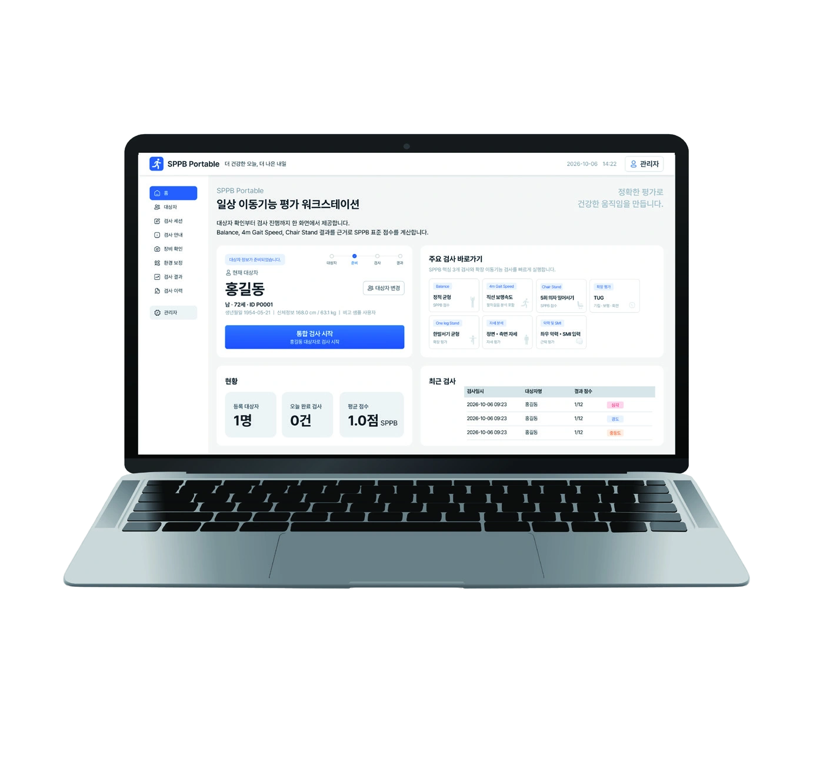
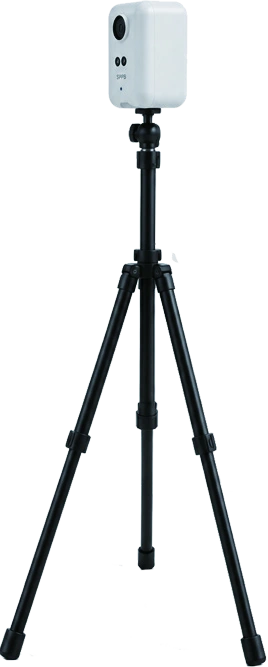

BALANCE
BALANCE균형 검사
얼마나 안정적으로
설 수 있나요?
양발 모으기, 반일렬 서기, 일렬 서기.
자세별 균형 유지 능력을 확인합니다.
SMART PHYSICAL PERFORMANCE ASSESSMENT
간편 신체 기능 검사 · SPPB
서고, 걷고, 일어서는 능력.
세 가지 수행검사로 살펴보는 신체기능.

UNDERSTAND THE MOVEMENT
SPPB는 Short Physical Performance Battery의 약자입니다.
균형, 보행속도, 의자 일어서기를 통해
하지 신체기능을 평가합니다.
BALANCE균형 검사
양발 모으기, 반일렬 서기, 일렬 서기.
자세별 균형 유지 능력을 확인합니다.
 GAIT SPEED
GAIT SPEED보행속도 검사
정해진 구간을 걷는 시간을 측정하고
보행속도를 확인합니다.
 CHAIR STAND
CHAIR STAND의자 일어서기 검사
의자에서 5회 반복해서 일어나는
수행 시간을 측정합니다.
제품 카탈로그의 검사 안내 이미지입니다. 검사 순서·보행 거리·채점은 적용 프로토콜에 따릅니다. Portable은 4m 보행을 안내하며, SPPB 100은 설정 가능한 보행 구간을 지원합니다.
THREE TESTS, ONE SCORE
세 가지 검사 점수를 합산해
0~12점의 SPPB 총점으로 확인합니다.
점수는 신체기능 평가를 위한 자료입니다.
근감소증 평가에서는 근육량·근력 등 다른 지표와 함께 해석합니다.
항목별 최대 점수와 총점 범위를 설명한 그래픽입니다.
개인의 검사 결과 또는 진단 구간을 표시한 것이 아닙니다.
SPPB 100
균형 측정 패드와 전용 센서 의자,
거리 센서로 신체기능 평가를 지원합니다.
SPPB 100 · 제공 카탈로그의 구성 예시
카탈로그 기준 356개 FSR 센서를 내장합니다.
패드의 LED 가이드가 검사 자세를 안내합니다.
4정점 로드셀과 거리 센서를 적용해
의자 일어서기 수행을 측정합니다.
음성 안내, 사용자 데이터 관리,
결과 리포트의 엑셀 출력을 지원합니다.
FROM MEASUREMENT TO RECORD
검사 항목별 결과와 대상자 기록을
하나의 운영 흐름으로 관리하세요.
카탈로그 수록 화면 예시 · 실제 화면은 버전에 따라 다를 수 있습니다.
SPPB 세부 검사와 TUG, 한발서기 등
필요한 항목을 선택해 평가합니다.
사용자를 등록하고 검사 기록을 관리합니다.
기관 운영에 맞는 데이터 관리 방식을 상담하세요.
좌우 악력 측정 및 ASM 입력 기능으로
근력·근육량 관련 정보를 함께 살펴봅니다.
ASM은 별도로 측정한 값을 입력하는 항목입니다. SPPB 검사 자체가 근육량을 직접 측정하는 것은 아닙니다. 악력계의 포함 여부와 데이터 연동 범위는 공급 구성에 따라 확인해 주세요.
BEYOND THE CORE TESTS
SPPB 100 카탈로그에서 안내하는
추가 검사·입력 항목입니다.
의자 센서와 거리 센서를 통해
TUG 수행시간을 측정합니다.
왼발·오른발의
균형 유지시간을 확인합니다.
왼손과 오른손의
악력을 확인합니다.
별도 측정한 근육량 정보를
입력해 평가에 참고합니다.
SPPB PORTABLE
AI 비전과 LiDAR를 활용하는 이동 기능 평가.
PC와 소형 디바이스로 구성된 포터블 솔루션입니다.


마커나 웨어러블 없이 카메라 영상으로
전신 24개 관절과 발 랜드마크를 추적합니다.
보행 구간의 거리를 측정하고 기준선을 표시합니다.
4m 보행속도 검사의 자동 종료를 지원합니다.
준비 상태와 위치를 안내하고,
올바른 위치에서 측정을 시작하도록 돕습니다.
Portable의 기능은 해당 카탈로그 기준입니다. 악력·SMI의 입력 또는 연동 방식, 필요 장비, PC 포함 범위는 도입 상담 시 확인해 주세요. 검사자의 관찰과 대상자 안전 확보가 필요합니다.
EVIDENCE & CONTEXT
제공된 고시 안내에는 근감소증 의심 환자 및 환자의 진단과 치료효과 모니터링을 위한 신체기능 평가가 설명되어 있습니다.
균형·보행속도·의자 일어서기 결과를 근육량 등 다른 측정지표와 종합하는 방식입니다.
보건복지부 고시 제2024-254호 관련 제공 자료 기준.
검사 기술에 대한 평가이며, 특정 제품 자체의 인증·허가를 뜻하지 않습니다.
고령자 41명을 대상으로 한 연구에서 수기 SPPB와 센서 기반 SPPB의 총점 ICC가 0.8654로 보고되었습니다.
Min & Min, 제공된 accepted manuscript 기준.
ICC는 측정 일치도를 나타내는 통계 지표입니다. 정확도 백분율이 아니며 Portable의 성능 수치로 적용하지 않습니다.
FOR YOUR INSTITUTION
보건소·복지관·재활 및 요양기관·연구기관에
평가 목적에 맞는 운영 흐름을 제안합니다.
수행 가능 여부와 검사 공간을 확인하고
적용할 프로토콜을 준비합니다.
대상자에게 동작을 설명하고
검사 중 안전을 관찰합니다.
영역별 결과와 총점을 살펴보고
평가 목적에 맞게 기록합니다.
같은 조건과 프로토콜로 재평가해
이전 기록과 비교합니다.
CHOOSE YOUR SYSTEM
SPPB 100 사양은 카탈로그 기준으로 표기했습니다. 별도 제품사양서와 일부 치수·센서 범위·구성품 표기에 차이가 있어, 최종 납품 사양은 견적서로 확인해 주세요.
GOOD TO KNOW
SPPB는 신체기능을 평가하는 검사입니다. 제공된 고시 자료에서는 근감소증 진료지침에 따라 근육량 등 다른 측정지표와 종합하도록 안내합니다.
SPPB 100은 센서 패드와 전용 의자, 거리 센서를 사용하는 구성이며, Portable은 카메라 기반 AI 분석과 LiDAR를 활용합니다. 운영 장소, 이동 필요성, 평가 항목에 맞춰 선택할 수 있도록 상담합니다.
보행 구간과 장비 배치, 대상자 보호를 위한 여유 공간이 필요합니다. Portable 카탈로그는 4m 보행을 안내합니다. 검사 시간은 대상자의 수행 상태와 검사 구성에 따라 달라지므로 실제 운영 조건으로 확인해 주세요.
제공된 SPPB 100 제품사양서는 국내 설치·운용교육 무상 제공과 설치·검수 완료 후 1년의 무상 하자보증을 안내합니다. 현재 적용 조건과 Portable의 지원 범위는 계약 시 확인해 주세요.
START WITH YOUR NEXT ASSESSMENT
사용 장소, 평가 목적, 이동 운영 여부를 알려주세요.
기관에 맞는 제품 구성과 도입 조건을 안내합니다.
SPPB 100 카탈로그에 기재된 피지오컴퍼니 문의처입니다.
버튼을 누르면 전화·이메일 앱으로 연결됩니다.